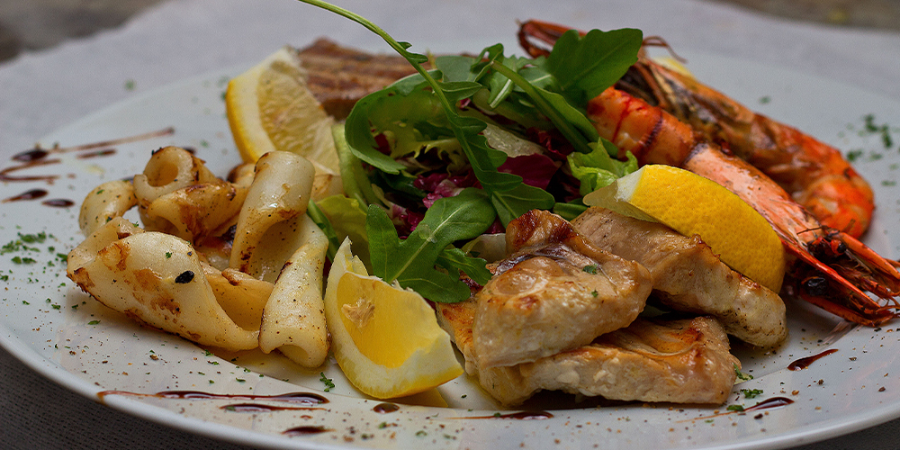

Todays specials  Events News 9/1 9/3 9/4 9/23 10/1 10/3 10/14 Celebrity Guest Chef Night New Menu Samplers! Chef Citrus Styles 9Pork Pork and more Pork! Celebrity Guest Chef Night New Menu Samplers! Iron Chef Citrus Style